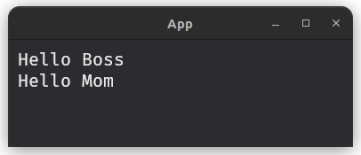
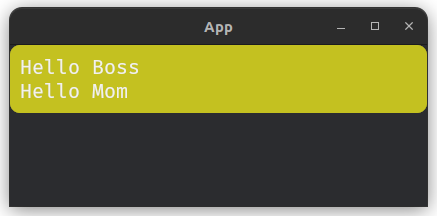
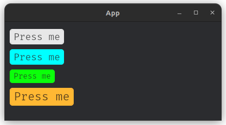
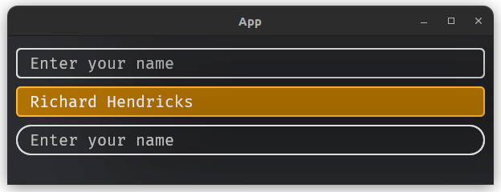
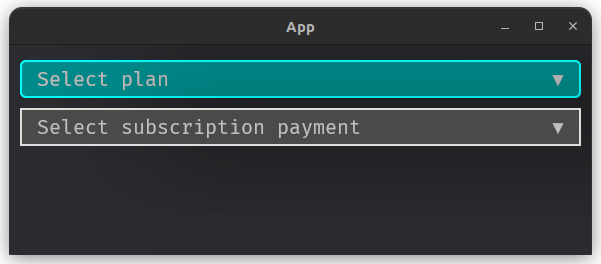
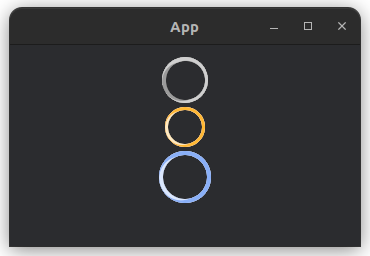

What is Famiq?
Famiq is a UI library wrapped around Bevy UI module by providing default widgets and a simple way to manage styles. Instead of writing Rust code for styling, developers can define styles in a well known JSON file. These styles are then parsed into Bevy's native UI styles, significantly reducing boilerplate code.
Just like in HTML/CSS, you can provide styles to widget via either id or classes.
Simple button
let my_btn = fa_button(&mut builder, "Press me").build();. &mut builder is a mutable reference of FamiqWidgetBuilder.
If you want to make changes to the widget, you can simply give it an id or classes.
let my_btn = fa_button(&mut builder, "Press me").id("#my-btn").build();{
"#my-btn": {
"background_color": "yellow"
}
}
Hot reload
Hot-reload can be enabled during development. When it's enabled, every changes in json file will reflect the running app immediately without needing to re-compile the app.
let mut builder = FamiqWidgetBuilder::new(
&mut commands,
&mut builder_res,
&asset_server
);
builder.hot_reload();Bevy versions support
Famiq is new and still in early stage of development. Currently, it supports only 0.15.x onward.
Installation
Famiq can be installed by adding this line into Cargo.toml file.
[dependencies]
famiq = { git = "https://github.com/muongkimhong/famiq", tag = "v0.2.4" }
-
It's recommended to use the latest version which is
0.2.4. -
Crate and rustdoc are not available yet.
Getting Start
use bevy::prelude::*;
use famiq::prelude::*;
fn main() {
App::new()
.add_plugins(DefaultPlugins)
.add_plugins(FamiqPlugin) // add plugin
.add_systems(Startup, setup)
.run();
}
fn setup(
mut commands: Commands,
mut builder_res: ResMut<FamiqWidgetResource>, // required
asset_server: ResMut<AssetServer>, // required
) {
// create a widget builder
let mut builder = FamiqWidgetBuilder::new(
&mut commands,
&mut builder_res
&asset_server,
);
// create simple texts using the builder
let hello_boss = fa_text(&mut builder, "Hello Boss").build();
let hello_mom = fa_text(&mut builder, "Hello Mom").build();
// add texts to container
fa_container(&mut builder)
.children(vec![hello_boss, hello_mom])
.build();
}
Custom font
By default, Famiq uses Fira mono regular as font. To use custom font, you can simply call
use_font_path() method.
// path is relative to assets folder outside src directory.
builder.use_font_path("path/to/font.ttf");⚠️ some fonts might cause rendering issue including positioning and styling.
Custom json file for styling
By default, Famiq will look for json file for styling at assets/styles.json. If you want to use another path or name, for example assets/styles/widget_styles.json, you can simply call use_style_path() method.
builder.use_style_path("assets/styles/widget_styles.json");Hot reload
Hot-reload can be enabled during development. When it's enabled, every changes in json file will reflect the running app immediately without needing to re-compile the app.
builder.hot_reload();How styling works?
Bevy's default approach to UI development requires writing Rust code for styling, which can quickly become verbose and repetitive. Famiq introduces a way to define styles using JSON file, making UI development in Bevy more accessible and efficient.
Key Features
- JSON-based Styling: Write styles in a familiar, CSS-like JSON format.
- Automatic Parsing: JSON styles are parsed into Bevy's native style format.
- Reduced Boilerplate: Eliminate repetitive Rust code for UI styling.
- Hot-Reload: Any changes made to json file will be reflected to the running app without needing to re-compile the app.
Example
Normal Bevy UI styles.
commands.spawn((
Node {
border: UiRect::all(Val::Px(3.0)),
padding: UiRect {
left: Val::Px(5.0),
right: Val::Px(5.0),
top: Val::Px(10.0),
bottom: Val::Px(10.0)
},
margin: UiRect::All(Val::Auto),
width: Val::Percent(100.0),
..default()
},
BorderColor(Color::srgba(1.0, 1.0, 1.0, 0.3)),
BorderRadius::all(Val::Px(5.0))
));With Famiq, you can simply give widget an id or classes, then write styles in json file.
{
"#my-widget-id": {
"padding": "5px 5px 10px 10px",
"border": "3px 3px 3px 3px",
"border_color": "srgba 1.0, 1.0, 1.0, 0.3",
"border_radius": "5px 5px 5px 5px",
"width": "100%",
"margin": "auto auto auto auto"
}
}
Supported & Unsupported styles
Unsupported
grid_template_rows: Vec<RepeatedGridTrack>
grid_template_columns: Vec<RepeatedGridTrack>
grid_auto_rows: Vec<GridTrack>
grid_auto_columns: Vec<GridTrack>
grid_row: GridPlacement
grid_column: GridPlacementSupported
color: Color // can be used for fa_text & TextBundle only
font_size: f32 // can be used for fa_text & TextBundle only
background_color: BackgroundColor
border_color: BorderColor
border_radius: BorderRadius
visibility: Visibility
z_index: ZIndex
display: Display
position_type: PositionType
overflow: Overflow
direction: Direction
left: Val
right: Val
top: Val
bottom: Val
width: Val
height: Val
min_width: Val
min_height: Val
max_width: Val
max_height: Val
aspect_ratio: Option<f32>
align_items: AlignItems
justify_items: JustifyItems
align_self: AlignSelf
justify_self: JustifySelf
align_content: AlignContent
justify_content: JustifyContent
margin: UiRect
padding: UiRect
border: UiRect
flex_direction: FlexDirection
flex_wrap: FlexWrap
flex_grow: f32
flex_shrink: f32
flex_basis: Val
row_gap: Val
column_gap: Val
grid_auto_flow: GridAutoFlowSupported Val enum
Val {
Auto,
Px,
Percent,
Vw,
Vh
}Supported Color enum
Color {
Srgba(Srgba),
LinearRgba(LinearRgba),
Hsla(Hsla)
}How to write bevy styles in JSON file.
Famiq supports almost all UI styles provided by Bevy engine.
id & Class
Famiq supports styles via id and classes.
{
"#my-widget-id": {
..
},
".some-class": {
..
}
}
class_namemust starts with dot..
For text widgets
-
color: text color. Supports onlysrgba,linear_rgba,hslaand basic colors.Examples,
"color": "srgba 0.961, 0, 0.784, 0.961""color": "yellow"
https://docs.rs/bevy/latest/bevy/prelude/struct.TextColor.html
-
font_size: text font size.Example,
"font_size": "14"https://docs.rs/bevy/latest/bevy/prelude/struct.TextFont.html#structfield.font_size
Can be used for fa_text and fa_fps widgets.
For node widgets
-
background_color: supports onlysrgba,linear_rgba,hslaand basic colors.Examples,
"background_color": "srgba 0.961, 0, 0.784, 0.961""background_color": "green"
https://docs.rs/bevy/latest/bevy/prelude/struct.BackgroundColor.html
-
border_color: supports onlysrgba,linear_rgba,hslaand basic colors.Examples,
"border_color": "linear_rgba 0.961, 0, 0.784, 0.961""border_color": "pink"
https://docs.rs/bevy/latest/bevy/prelude/struct.BorderColor.html
-
border_radius: top_left, top_right, bottom_left, bottom_right.Example,
"border_radius": "10px 10px 10px 10px"https://docs.rs/bevy/latest/bevy/prelude/struct.BorderRadius.html
-
border_radius_top_left: this will override top_left value defined inborder_radius. -
border_radius_top_right: this will override top_right value defined inborder_radius. -
border_radius_bottom_left: this will override bottom_left value defined inborder_radius. -
border_radius_bottom_right: this will override bottom_right value defined inborder_radius. -
visibility: supports onlyvisible,hiddenandinherited.https://docs.rs/bevy/latest/bevy/prelude/enum.Visibility.html
-
z_index: indicates that this Node entity’s front-to-back ordering is not controlled solely by its location in the UI hierarchy. A node with a higher z-index will appear on top of sibling nodes with a lower z-index.Example,
"z_index": "2" -
display: defines the layout model used by node. Supportsflex,grid,blockandnone. -
position_type: the strategy used to position node. Supportsrelativeandabsolute.https://docs.rs/bevy/latest/bevy/prelude/enum.PositionType.html
-
overflow_x: whether to show or clip overflowing items on the x axis. Supportsvisible,clip,hiddenandscroll.https://docs.rs/bevy/latest/bevy/prelude/struct.Overflow.html
-
overflow_y: whether to show or clip overflowing items on the y axis. Supportsvisible,clip,hiddenandscroll.https://docs.rs/bevy/latest/bevy/prelude/struct.Overflow.html
-
left: the horizontal position of the left edge of the node.https://docs.rs/bevy/latest/bevy/prelude/struct.Node.html#structfield.left
-
right: the horizontal position of the right edge of the node.https://docs.rs/bevy/latest/bevy/prelude/struct.Node.html#structfield.right
-
top: the vertical position of the top edge of the node.https://docs.rs/bevy/latest/bevy/prelude/struct.Node.html#structfield.top
-
bottom: the vertical position of the bottom edge of the node.https://docs.rs/bevy/latest/bevy/prelude/struct.Node.html#structfield.bottom
-
width: the ideal width of the node. width is used when it is within the bounds defined bymin_widthandmax_width.https://docs.rs/bevy/latest/bevy/prelude/struct.Node.html#structfield.width
-
height: the ideal height of the node. height is used when it is within the bounds defined bymin_heightandmax_height.https://docs.rs/bevy/latest/bevy/prelude/struct.Node.html#structfield.height
-
min_width: the minimumwidthof the node.min_widthis used if it is greater thanwidthand/ormax_width.https://docs.rs/bevy/latest/bevy/prelude/struct.Node.html#structfield.min_width
-
min_height: the minimumheightof the node.min_heightis used if it is greater thanheightand/ormax_height.https://docs.rs/bevy/latest/bevy/prelude/struct.Node.html#structfield.min_height
-
max_width: the maximumwidthof the node.max_widthis used if it is within the bounds defined bymin_widthandwidth.https://docs.rs/bevy/latest/bevy/prelude/struct.Node.html#structfield.max_width
-
max_height: the maximumheightof the node.max_heightis used if it is within the bounds defined bymin_heightandheight.https://docs.rs/bevy/latest/bevy/prelude/struct.Node.html#structfield.max_height
-
align_items: used to control how each individual item is aligned by default within the space they’re given. Supportsdefault,start,end,flex_start,flex_end,center,base_lineandstretch.https://docs.rs/bevy/latest/bevy/prelude/struct.Node.html#structfield.align_items
-
justify_items: used to control how each individual item is aligned by default within the space they’re given. Supportsdefault,start,end,flex_start,flex_end,center,base_lineandstretch.https://docs.rs/bevy/latest/bevy/prelude/struct.Node.html#structfield.justify_items
-
align_left: used to control how the specified item is aligned within the space it’s given. Supportsauto,start,end,flex_start,flex_end,center,base_lineandstretch.https://docs.rs/bevy/latest/bevy/prelude/struct.Node.html#structfield.align_self
-
justify_content: used to control how items are distributed. Supportsdefault,start,end,flex_start,flex_end,center,stretch,space_between,space_evenlyandspace_around.https://docs.rs/bevy/latest/bevy/prelude/struct.Node.html#structfield.justify_content
-
margin: left, right, top, bottom.Example,
"margin": "10px 10px 5px 5px"https://docs.rs/bevy/latest/bevy/prelude/struct.Node.html#structfield.margin
-
margin_left: this will override left value defined inmargin. -
margin_right: this will override right value defined inmargin. -
margin_top: this will override top value defined inmargin. -
margin_bottom: this will override bottom value defined inmargin. -
padding: left, right, top, bottom.Example,
"padding": "10px 10px 5px 5px"https://docs.rs/bevy/latest/bevy/prelude/struct.Node.html#structfield.padding
-
padding_left: this will override left value defined inpadding. -
padding_right: this will override right value defined inpadding. -
padding_top: this will override top value defined inpadding. -
padding_bottom: this will override bottom value defined inpadding. -
border: left, right, top, bottom.Example,
"padding": "10px 10px 5px 5px"https://docs.rs/bevy/latest/bevy/prelude/struct.Node.html#structfield.border
-
border_left: this will override left value defined inborder. -
border_right: this will override right value defined inborder. -
border_top: this will override top value defined inborder. -
border_bottom: this will override bottom value defined inborder. -
flex_direction: whether a Flexbox container should be a row or a column. Supportsrow,column,row_reverseandcolumn_reverse.https://docs.rs/bevy/latest/bevy/prelude/struct.Node.html#structfield.flex_direction
-
flex_wrap: whether a Flexbox container should wrap its contents onto multiple lines if they overflow. Supportsno_wrap,wrapandwrap_reverse.https://docs.rs/bevy/latest/bevy/prelude/struct.Node.html#structfield.flex_wrap
-
flex_grow: defines how much a flexbox item should grow if there’s space available. Defaults to "0" (don’t grow at all).https://docs.rs/bevy/latest/bevy/prelude/struct.Node.html#structfield.flex_grow
-
flex_shrink: defines how much a flexbox item should shrink if there’s not enough space available. Defaults to 1.https://docs.rs/bevy/latest/bevy/prelude/struct.Node.html#structfield.flex_shrink
-
flex_basis: the initial length of a flexbox in the main axis, before flex growing/shrinking properties are applied.https://docs.rs/bevy/latest/bevy/prelude/struct.Node.html#structfield.flex_basis
-
row_gap: the size of the gutters between items in a vertical flexbox layout or between rows in a grid layout.https://docs.rs/bevy/latest/bevy/prelude/struct.Node.html#structfield.row_gap
-
column_gap: the size of the gutters between items in a horizontal flexbox layout or between column in a grid layout.https://docs.rs/bevy/latest/bevy/prelude/struct.Node.html#structfield.column_gap
-
grid_auto_flow: controls whether automatically placed grid items are placed row-wise or column-wise as well as whether the sparse or dense packing algorithm is used. Only affects Grid layouts.https://docs.rs/bevy/latest/bevy/prelude/struct.Node.html#structfield.grid_auto_flow
Interaction
All widgets provided by Famiq have Interaction component attached by default.
That means all those widgets will emit FaInteractionEvent to bevy's EventReader with either Pressed, Hovered or None.
pub struct FaInteractionEvent {
pub entity: Entity,
pub widget_id: Option<String>,
pub interaction: Interaction,
pub widget: WidgetType,
}Available widget types
pub enum WidgetType {
Root,
Button,
Container,
Text,
FpsText,
TextInput,
ListView,
ListViewItem,
Selection,
SelectionChoice,
Circular,
Modal,
Image
}Handle interaction
You can write a bevy system to handle Famiq’s widgets interaction.
fn handle_button_press_system(mut events: EventReader<FaInteractionEvent>) {
for e in events.read() {
if e.widget == WidgetType::Button && e.interaction == Interaction::Pressed {
// make sure this works only with widgets that have id provided
if let Some(id) = e.widget_id {
match id.as_str() {
"#my-login-btn" => {
// do something with login
},
"#my-forgot-password-btn" => {
// do something with forgot password
}
_ => ()
}
}
}
}
}Famiq Widgets
Famiq provides some default widgets that are likely required in any UI development.
Default widgets
FaContainer
🟢 Doesn't need container
🟢 Accepts child/children
An empty and stylyable widget. Think of it as a div inside HTML.
Widget API
pub fn fa_container<'a>(builder: &'a mut FamiqWidgetBuilder) -> FaContainerBuilder<'a> {
// ..
}usage
let container = fa_container(&mut builder).build();Return Entity of the widget which can be used as child for another widget.
Example
Texts without container
let boss = fa_text(&mut builder, "Hello Boss").build();
let mom = fa_text(&mut builder, "Hello Mom").build();
Texts inside container
let boss = fa_text(&mut builder, "Hello Boss").build();
let mom = fa_text(&mut builder, "Hello Mom").build();
fa_container(&mut builder)
.children(vec![boss, mom])
.build();
Styling
id and classes can be provided to container to be able to style it from json file.
fa_container(&mut builder)
.id("#container")
.children(vec![boss, mom])
.build();{
"#container": {
"background_color": "yellow",
"border_color": "yellow",
"border_radius": "10px 10px 10px 10px"
}
}

FaButton
🟡 Needs container
🟡 Doesn't accept child/children
Colors
pub enum BtnColor {
Default,
Primary,
PrimaryDark,
Secondary,
Success,
SuccessDark,
Danger,
DangerDark,
Warning,
WarningDark,
Info,
InfoDark
}Shapes
pub enum BtnShape {
Default,
Round,
Rectangle
}Sizes
pub enum BtnSize {
Small,
Normal,
Large,
}Widget API
pub fn fa_button<'a>(builder: &'a mut FamiqWidgetBuilder, text: &str) -> FaButtonBuilder<'a> {
// ..
}Usage
let button = fa_button(&mut builder, "Press me").build();Return Entity of the widget which must be used inside FaContainer widget.
Built-in classes
-
Color:
is-primary,is-primary-dark,is-secondary,is-danger,is-danger-dark,is-info,is-info-dark,is-success,is-success-dark,is-warning,is-warning-dark. -
Size:
is-small,is-normal,is-large. -
Shape:
is-round,is-rectangle.
Example
// default
let my_btn = fa_button(&mut builder, "Press me")
.id("#my-btn")
.build();
// info
let info_btn = fa_button(&mut builder, "Press me")
.id("#info-btn")
.class("is-info")
.build();
// success & small
let small_btn = fa_button(&mut builder, "Press me")
.class("is-success is-small")
.build();
// warning & large
let large_btn = fa_button(&mut builder, "Press me")
.class("is-warning is-large")
.build();
fa_container(&mut builder)
.children(vec![my_btn, info_btn, small_btn, large_btn])
.build();
Handle button press
fn handle_button_press_system(mut events: EventReader<FaInteractionEvent>) {
for e in events.read() {
if e.widget == WidgetType::Button && e.interaction == Interaction::Pressed {
// make sure this works only with widgets that have id provided
if let Some(id) = e.widget_id {
match ud.as_str() {
"#my-btn" => {
// do something with my button
},
"#info-btn" => {
// do something with info button
}
_ => ()
}
}
}
}
}FaText
🟡 Needs container
🟡 Doesn't accept child/children
API
pub fn fa_text<'a>(builder: &'a mut FamiqWidgetBuilder, value: &str) -> FaTextBuilder<'a> {
// ..
}Usage via builder
let text = fa_text(&mut builder, "Some text").build();Return Entity of the widget which must be used inside FaContainer widget.
Example
let boss = fa_text(&mut builder, "Hello Boss").build();
let mom = fa_text(&mut builder, "Hello Mom").build();
fa_container(&mut builder)
.children(vec![boss, mom])
.build();FaFpsText
🟢 Doesn't need container
🟡 Doesn't accept child/children
Widget API
pub fn fa_fps<'a>(builder: &'a mut FamiqWidgetBuilder) -> FaFpsTextBuilder<'a> {
// ..
}Usage via builder
fa_fps(&mut builder).build();return Entity which can be used as a child of a FaContainer.
change_color(): change number color based on the value.right_side(): make fps text appears at the top right corner.
Example
fa_fps(&mut builder).change_color().right_side().build();FaTextInput
🟡 Needs container
🟡 Doesn't accept child/children
Variants
pub enum TextInputVariant {
Default,
Outlined,
Underlined,
}Colors
pub enum TextInputColor {
Default,
Primary,
Secondary,
Success,
Danger,
Warning,
Info,
}Sizes
pub enum TextInputSize {
Small,
Normal,
Large,
}Shapes
pub enum TextInputShape {
Default,
Round,
Rectangle
}Resource
Resource to store key value pair of text-input id & its data.
pub struct FaTextInputResource {
pub inputs: HashMap<String, String>,
}
impl FaTextInputResource {
pub fn update_or_insert(&mut self, id: String, new_value: String) {
// ..
}
}Widget API
pub fn fa_text_input<'a>(
builder: &'a mut FamiqWidgetBuilder,
placeholder: &str
) -> FaTextInputBuilder<'a> {
// ..
}Usage
let input = fa_text_input(&mut builder, "Enter your name").build();Return Entity of the widget which must be used as child of FaContainer widget.
Built-in classes
-
Color:
is-primary,is-secondary,is-warning,is-info,is-success,is-danger. -
Size:
is-small,is-normal,is-large. -
Shapes:
is-round,is-rectangle. -
Variant:
is-underlined,is-outlined.
Example
// default
let input_default = fa_text_input(&mut builder, "Enter your name").build();
// info & large
let input_info_large = fa_text_input(&mut builder, "Enter your name")
.class("is-info is-large")
.build();
// warning & round
let input_warning_round = fa_text_input(&mut builder, "Enter your name")
.class("is-warning is-round")
.build();
fa_container(&mut builder)
.children(vec![input_default, input_info_large, input_warning_round])
.build();
Getting input data
The input data can be read from FaTextInputResource within system.
fn my_system(input_resource: Res<FaTextInputResource>) {
if let Some(data) = input_resource.inputs.get("#my-text-input-id") {
println!("Data: {:?}", data);
}
}FaSelection
🟡 Needs container
🟡 Doesn't accepts child/children
Variants
pub enum SelectorVariant {
Outlined,
Default,
Underlined,
}Colors
pub enum SelectorColor {
Default,
Primary,
Secondary,
Success,
Danger,
Warning,
Info,
}Sizes
pub enum SelectionSize {
Small,
Normal,
Large,
}Shapes
pub enum SelectorShape {
Default,
Round,
Rectangle
}Resource
Resource to store key value pair of selector id & selected choice.
pub struct SelectedChoicesResource {
pub choices: HashMap<String, String>
}
impl SelectedChoicesResource {
pub fn update_or_insert(&mut self, id: String, selected_choice: String) {
// ..
}
}API
pub fn fa_selection<'a>(
builder: &'a mut FamiqWidgetBuilder,
placeholder: &str
) -> FaSelectionBuilder<'a> {
// ..
}Usage via builder
let selection = fa_selection(&mut builder, "Select choice")
.choices(vec!["Choice 1", "Choice 2"])
.build();Return Entity of the widget which must be used as child of FaContainer widget.
Built-in classes
-
Color:
is-primary,is-secondary,is-warning,is-info,is-success,is-danger. -
Size:
is-small,is-normal,is-large. -
Shapes:
is-round,is-rectangle. -
Variant:
is-underlined,is-outlined.
Example
let plans = fa_selection(&mut builder, "Select plan")
.class("is-info")
.choices(vec!["Personal", "Team", "Enterprise"])
.build();
);
let subscriptions = fa_selection(&mut builder, "Select subscription payment")
.class("is-rectangle")
.choices(vec!["Weekly", "Monthly", "Annually"])
.build();
);
fa_container(&mut builder)
.children(vec![plans, subscriptions])
.build();
Getting selected choice
The selected choice of a selection can be read from SelectedItemsResource within system.
fn my_system(selected_items: Res<SelectedItemsResource>) {
if let Some(selected_choice) = selected_items.items.get("#my-selection-id") {
println!("Choice: {:?}", selected_choice);
}
}FaCircular
🟡 Needs container
🟡 Doesn't accept child/children
Spinning circular.
Variants
pub enum CircularColor {
Default,
Primary,
Secondary,
Success,
Danger,
Warning,
Info,
}Sizes
pub enum CircularSize {
Small,
Normal,
Large
}API
pub fn fa_circular<'a>(builder: &'a mut FamiqWidgetBuilder) -> FaCircularBuilder<'a> {
// ..
}Usage
let circular = fa_circular(&mut builder).build();Return Entity of the widget which must be used inside FaContainer widget.
Built-in classes
-
Color:
is-primary,is-secondary,is-warning,is-info,is-success,is-danger. -
Size:
is-small,is-normal,is-large.
Example
// default
let cir = fa_circular(&mut builder).build();
// warning & small
let warning_cir = fa_circular(&mut builder)
.class("is-warning is-small")
.build();
// primary & large
let primary_cir = fa_circular(&mut builder)
.class("is-primary is-large")
.build();
fa_container(&mut builder)
.children(vec![cir, warning_cir, primary_cir])
.build();
FaModal
🟢 Doesn't need container
🟢 Accepts child/children
API
pub fn fa_modal<'a>(builder: &'a mut FamiqWidgetBuilder) -> FaModalBuilder<'a> {
// ..
}Usage
let modal = fa_modal(&mut builder).build();Show/Hide modal
Modals can be shown or hided by updating FaModalState component.
Example,
// store modal entity here to show/hide in future
#[derive(Resource)]
struct Modals {
entity: Entity
}
fn setup_ui(
// other args required by Famiq..
mut modals: ResMut<Modals>
) {
let text = fa_text(&mut builder, "Hello world").build();
let modal = fa_modal(&mut builder)
.children(vec![text])
.build();
modals.entity = modal;
}
// example system handle button press
fn on_btn_press_system(
modals: Res<Modals>,
mut modals_q: Query<&mut FaModalState>
) {
// some other code to handle button press event..
// set to true to show modal, false to hide.
if let Ok(mut state) = modals_q.get_mut(modals.entity) {
state.0 = true;
}
}FaListView
🟢 Doesn't need container
🟢 Accepts child/children
API
pub fn fa_listview<'a>(builder: &'a mut FamiqWidgetBuilder) -> FaListViewBuilder<'a> {
// ..
}return Entity which can be used as child of FaContainer.
Usage
let button = fa_button(&mut builder, "Press me").build();
let input = fa_text_input(&mut builder, "Enter your name").build();
fa_listview(&mut builder)
.children(vec![input, button])
.build();FaImage
🟡 Needs container
🟡 Doesn't accept child/children
API
pub fn fa_image<'a>(builder: &'a mut FamiqWidgetBuilder, path: &str) -> FaImageBuilder<'a> {
// ..
}path: Path to image relative toassetsfolder.- Return entity of the widget which must be used as child of
FaContainerwidget. - Support only
jpgandpngformat.
Usage
let image = fa_image(&mut builder, "path/to/image.jpg").build();Custom size
By default, fa_image will load image at the original size. To use custom size, simply call size() method.
let image = fa_image(&mut builder, "path/to/image.jpg")
.size(Val::Px(200.0), Val::Px(200.0))
.build();Example
let famiq_logo = fa_image(&mut builder, "logo.jpeg")
.size(Val::Px(100.0), Val::Px(100.0))
.build();
fa_container(&mut builder).children(vec![famiq_logo]).build();
FaBgImage
A widget use to create background image that covers the entire window in UI world.
🟢 Doesn't need container
🟡 Doesn't accept child/children
API
pub fn fa_bg_image<'a>(builder: &'a mut FamiqWidgetBuilder, path: &str) -> FaBgImageBuilder<'a> {
// ..
}path: Path to image relative toassetsfolder.- Support only
jpgandpngformat.
Usage
fa_bg_image(&mut builder, "path/to/image.jpg").build();Example
fa_bg_image(&mut builder, "logo.jpeg").build();
let btn = fa_button(&mut builder, "Press me").class("is-primary").build();
fa_container(&mut builder).children(vec![btn]).build();